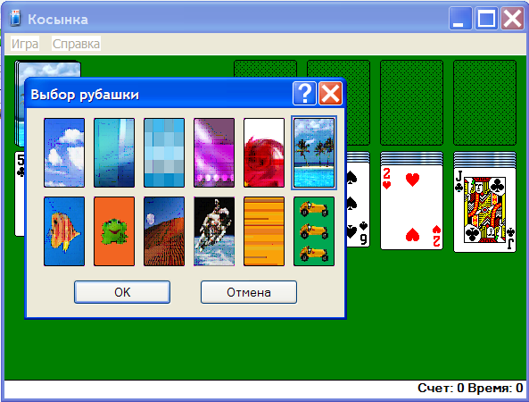
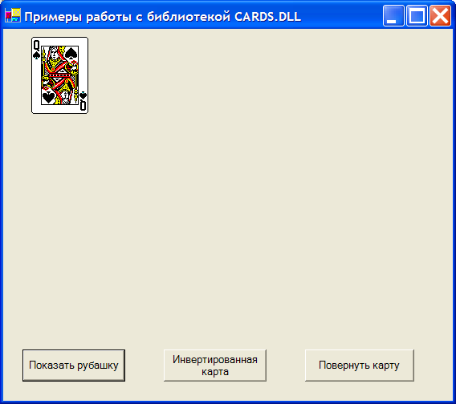
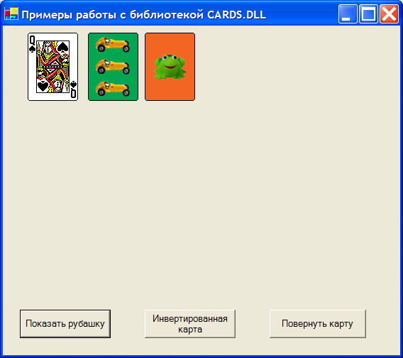
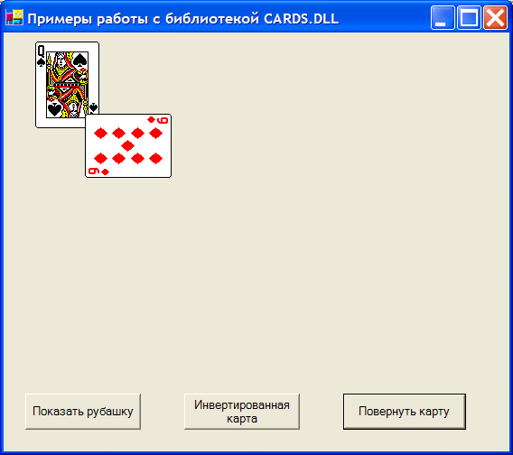

Оценка 207
[+1/-0]
Оценка 207
[+1/-0]

 Оценить
Оценить 


| Оценка 207
[+1/-0]
Оценить
|
Нет, мы не будем разбирать произведение А.С.Пушкина “Пиковая дама”. В данной статье я расскажу вам, как написать свою карточную игру на Visual Basic .NET с использованием библиотеки CARDS.DLL, входящей в состав Windows. Лично я впервые узнал о возможности использовании готовой библиотеки в своих программах из книги Брюса Мак-Кинни "Крепкий орешек Visual Basic". Я очень обрадовался, когда узнал, что нет необходимости самостоятельно рисовать колоду карт. Всю работу за нас сделали программисты из Microsoft (за что им отдельное спасибо!). Тех, кто по-прежнему программирует на Visual Basic 6.0, я отсылаю на свой сайт http://rusproject.narod.ru/games.htm, где вы можете найти подборку игр с использованием этой библиотеки. Но на дворе уже 2005 год и программисты вовсю изучают новую платформу .NET Framework. Давайте рассмотрим процесс создания карточной игры с учетом реалий сегодняшнего дня.
Прежде чему приступить к программированию игры, надо сначала выяснить, о чем собственно, идет речь. Итак, в состав Windows, начиная с Windows 95 (А может и раньше), традиционно входит набор карточных игр. Если внимательно приглядеться, можно заметить, что все игры имеют одинаковый интерфейс. Объясняется это очень просто – игры обращаются к одной и той же библиотеке. В Windows XP данная библиотека находится в файле CARDS.DLL. Впрочем, надо заметить, что название файла тоже менялось в разных версиях Windows, пройдя путь от 16-битной версии к 32-битной. Я думаю, самое время запустить какую-нибудь карточную игру, чтобы посмотреть, как вообще выглядят карты. Для наших целей лучше всего подойдет игры Косынка, которая имеет в своих настройках пункт Рубашка (меню Игры | Рубашка…).

Используя эту опцию, можно посмотреть не только на рабочую сторону карты, но и на обратную. Если ваше знакомство с Windows состоялось достаточно давно, то вы можете обратить внимание, что внешний вид карт (точнее, обратной их стороны) в Windows XP немного отличается от рубашек в играх на Windows 9x. Для особо любознательных сообщу, что в старых Windows некоторые виды рубашек даже содержали анимационные эффекты в виде летающих летучих мышей или мигающих приборов у робота.
Итак, библиотека CARDS.DLL содержит пять функций для работы с картами. Вот как выглядят объявления четырех функций:
Declare Function cdtInit Lib "cards.dll" (_ ByRef width As Integer, _ ByRef height As Integer) As Boolean Declare Function cdtDraw Lib "cards.dll" ( _ ByVal hdc As IntPtr, _ ByVal x As Integer, ByVal y As Integer, _ ByVal card As Integer, _ ByVal mode As Integer) As Boolean Declare Function cdtDrawExt Lib "cards.dll" (ByVal hdc As IntPtr, _ ByVal x As Integer, ByVal y As Integer, ByVal dx As Integer, _ ByVal dy As Integer, ByVal card As Integer, _ ByVal suit As Integer, ByVal color As Long) As Boolean Declare Sub cdtTerm Lib "cards.dll" () |
Объявление пятой функции cdtAnimate() я приводить не буду, так как в Windows XP она работать не будет. Если вам все-таки хочется поработать и с этой функцией, то обратить к поисковым службам. Да поможет вам Goggle!
Разберем объявленные функции поподробнее.
Функция cdtInit инициализирует библиотеку Cards.dll. Как видите, функция имеет два аргумента, в которых содержится информация о ширине и высоте карты в пикселях. Размер стандартной карты по умолчанию – 71 на 97 пикселей. Впрочем, можно не обращать внимания на эти величины при вызове функции, так как они не влияют на выводимый размер. При успешной инициализации возвращается TRUE, в противном случае возвращается FALSE.
Функция cdtTerm выполняет обратную задачу и очищает ресурсы. Данную функцию удобнее всего вызывать при закрытии программы.
Функция cdtDraw выводит на экран заданную карту. Функция имеет следующие параметры:
Карты можно рисовать на экране различными способами. Вот перечень доступных режимов.
Обратите внимание, что нельзя получить доступ к изображениям карт напрямую, сначала вам необходимо получить доступ к графическому контексту устройства.
Функция cdtDrawExt аналогична предыдущей функции cdtDraw, но имеет два дополнительных параметра, dx и dy, позволяющих определять размер выводимой карты.
В библиотеке содержится 68 картинок. Из них 52 выводят игровую картинку карты и 16 выводят обратную сторону (рубашку). Все карты хранятся в библиотеке в определенном порядке. Названия масти и ее перевод на русском дан в листинге ниже. Первой картой по порядку является (индекс = 0) туз треф (Ace of Clubs), далее туз бубен (Ace of Diamonds) и так далее. Так и идут все 52 карты от Clubs, Diamonds, Hearts до Spades и обратно к Clubs, начиная с туза и заканчивая королем. Эти карты можно представить с помощью двух перечислений для масти и номинала карты.
'Масти карт Public Enum eSUIT CLUBS = 0 ' трефы DIAMOND = 1 ' бубны HEARTS = 2 ' черви SPADES = 3 ' пики End Enum 'Номинал карты Public Enum eFace Ace = 0 'туз Two = 1 ' двойка Three = 2 ' тройка Four = 3 ' четверка Five = 4 ' пятерка Six = 5 ' шестерка Seven = 6 ' семерка Eight = 7 ' восьмерка Nine = 8 ' девятка Ten = 9 ' десятка Jack = 10 ' валет Queen = 11 ' дама King = 12 ' король End Enum |
Чтобы получить номер нужной карты, надо знать волшебную формулу:
card = eFace * 4 + eSuit |
Например, нужно получить номер пиковой дамы. Подставляем в формулу нужные значения:
card = eFace.Queen * 4 + eSUIT.DIAMOND |
Например, пиковой даме соответствует номер 47 (11 * 4 + 3).
Шестнадцать рисунков рубашек карт находятся в промежутке от 53 до 68. Опять используем перечисление для удобства:
' Картинки для рубашки Public Enum eBACK CROSSHATCH = 53 ' Сетка SKY = 54 ' Небо MINERAL = 55 ' Минерал FISH = 56 ' Рыба FROG = 57 ' Лягушка FLOWER = 58 ' Цветок ISLAND = 59 ' Остров с пальмами SQUARES = 60 ' Квадраты MAGENTA = 61 ' Фиолетовый узор SANDDUNES = 62 ' Песчаные дюны SPACE = 63 ' Астронавт LINES = 64 ' Линии CARS = 65 ' Машинки UNUSED = 66 ' Неиспользуемая карта THE_X = 67 ' Символ X THE_O = 68 ' Символ 0 End Enum |
Теперь можно приступить к написанию программы Для удобства расположим код рисования карт в отдельном классе cards, который будет базовым классом для примера. В этом классе разместим все функции, константы и перечисления. Так как при работе с карточной библиотекой необходима ее инициализация, то сделаем это в конструкторе класса:
Public Sub New() cdtInit(width, height) End Sub |
Наконец-то мы можем приступать к выводу карты на экран. Давайте оформим этот код в виде функции DrawCard:
Public Function DrawCard(ByVal hdc As IntPtr, ByVal x As Integer, _ ByVal y As Integer, ByVal card As Integer, ByVal mode As Integer) As Boolean Return cdtDraw(hdc, x, y, card, mode, &HFFFFFF) End Function |
При вызове данной функции понадобятся дескриптор контекста устройства, координаты выводимой карты, номер карты и режим вывода. Предположим, что нужно вывести пиковую даму. Вычисляем ее номер и вызываем функцию:
Private Sub Form1_Paint(ByVal sender As Object, ByVal e _ As System.Windows.Forms.PaintEventArgs) Handles MyBase.Paint hdc = e.Graphics.GetHdc() Try mycard.DrawCard(hdc, 35, 10, 47, 0) Finally If Not hdc Is Nothing Then e.Graphics.ReleaseHdc(hdc) End Try End Sub |
Таким образом, с помощью данной функции можно вывести любую карту из колоды. Процесс подключения созданного класса к основной форме приложения я опущу в целях экономии места. Вы можете все сами посмотреть в исходном примере.

Теперь, когда мы разобрались с открытыми картами, перейдем к выводу рубашек карт. Опять пишем функцию-обертку DrawBackCard:
Public Function DrawBackCard(ByVal hdc As IntPtr, ByVal x As Integer, _ ByVal y As Integer, ByVal back As eBACK) As Boolean Return cdtDraw(hdc, x, y, back, mdFaceDown, &HFFFFFF) End Function |
Эта функция почти аналогична предыдущей, только вместо картинки и режима вывода карты используется одно из значений перечисления eBack. Вот как выглядит вывод двух разных рубашек с изображением машинок и лягушки (хотя, конечно, в настоящей карточной игре используется рубашка одного вида)
Public Sub Button1_Click(ByVal sender As System.Object, _ ByVal e As System.EventArgs) Handles Button1.Click Dim g As Graphics = CreateGraphics() hdc = g.GetHdc() ' Выводим рубашки с изображением машинок и лягушки mycard.DrawBackCard(hdc, 120, 10, cards.eBACK.CARS) mycard.DrawBackCard(hdc, 200, 10, cards.eBACK.FROG) g.ReleaseHdc(hdc) End Sub |

Останавливаться на функциях DrawInvertedCard, DrawEmptyCard и DrawBigCard нет смысла, так как они весьма похожи на две предыдущие. Хочу только заметить, что функция DrawBigCard на самом деле может рисовать не только большие, но и маленькие карты, и она использует карточную функцию cdtDrawExt.
Можно выводить карты не только в стандартном виде, но и развернуть их на любой градус. Вот как будет выглядеть функция для вращения карты на 90 градусов
Public Sub DrawRotatedCard(ByVal g As Graphics, ByVal x As Integer, _ ByVal y As Integer, ByVal card As Integer, ByVal mode As Integer) Dim offScreenBitmap As Bitmap = New Bitmap(71, 97) Dim offScreenGraphics As Graphics = g.FromImage(offScreenBitmap) ' Получим дескриптор контекста устройства Dim hdc As IntPtr = offScreenGraphics.GetHdc() cdtDraw(hdc, 0, 0, card, mode, &HFFFFFF) ' Освобождаем ресурсы offScreenGraphics.ReleaseHdc(hdc) ' Массив из вершин (верхний левый угол, верхний правый угол, нижний левый угол) Dim aPoints() As Point = {New Point(x, y + 71), _ New Point(x, y), _ New Point(x + 97, y + 71)} g.DrawImage(offScreenBitmap, aPoints) End Sub |
Прежде всего создается новый графический объект, на котором будем рисовать. Затем создаем на его основе новый объект Graphics и получаем дескриптор контекста устройства, на котором рисуем карту как обычно, затем удаляем дескриптор контекста устройства для освобождения ресурсов. Теперь приступаем к вращению карты. Массив aPoints содержит три вершины прямоугольника. Три структуры Point содержат верхнюю левую, верхнюю правую и нижнюю левую углы прямоугольника. Массив передается массиву DrawImage(), где картинка, представленная параметрами (offScreenBitmap), деформируется и сдвигается, чтобы соответствовать параллелограмму, заданному параметром aPoints. Таким образом можно нарисовать любой поворот карты, просто надо вычислить нужное значение координат вершин карты.

Вот и подошел к концу рассказ о том, как использовать карточную библиотеку в своих программах. На самом деле, созданный проект выглядит немного неуклюже. Многие методы используют одни и те параметры, не очень удобен вызов конкретной карты и так далее. Улучшение кода (или основательная его переделка) будет вашим домашним заданием. Потрудитесь написать игру сами, чтоб получить удовольствие от собственной работы. Удачного вам программирования!
| Оценка 207
[+1/-0]
Оценить
|